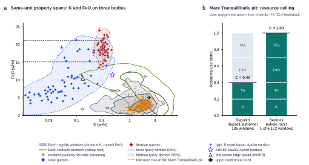
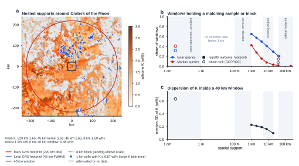
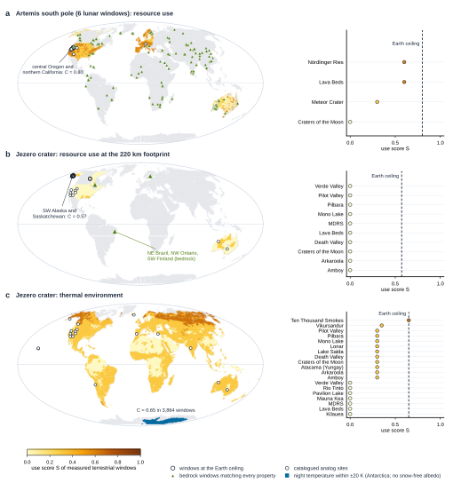

Key Points
- At orbital-footprint scale no Earth regolith matches lunar FeO, TiO₂, K and Th together; part of the gap is weathering, part petrogenesis.
- Setting-based screening reproduces expert analog classes but shifts candidates toward K- and Th-rich continental crust, away from targets.
- A boundary-condition inventory assigns terrain to field sites, feedstock chemistry to simulants and thermal regimes to test chambers.
Abstract
Terrestrial analogs are defined by function but are usually selected by qualitative descriptions of setting. We tested how far such settings reproduce the measured properties of lunar and Martian targets by placing 117 lunar and Martian query windows and 75,860 terrestrial windows in a property space harmonized in units, spatial support and sensing depth, and defined the Earth ceiling as the best use score any measured terrestrial window reaches. At the 40–220 km support of orbital spectrometers, no terrestrial regolith window reproduces lunar resource chemistry (mean ceiling 0.75), Martian FeO exceeds every terrestrial topsoil footprint, and Martian nights and lunar cold traps lie outside the terrestrial range; these limits persist under random weightings and doubled tolerances. The chemical shortfall has two sources. In the same windows, whole rock matches all four lunar resource properties for 25 of 59 queries and topsoil for none, so terrestrial weathering explains part of it, whereas high-titanium mare basalt and Martian crustal iron remain rare even in whole rock. Kilometre-scale patches matching lunar potassium and thorium occur in 65% of windows but average out by 40 km. Heuristic screening reproduced expert setting classes, enriching catalogued analogs about 12-fold, yet displaced candidates toward potassium- and thorium-rich continental crust in all 20 distinct pools, and ranking by same-unit properties retrieved matches far more often (retrieval efficiency 0.27–0.77 against −0.21 to 0.02). We propose a boundary-condition inventory that assigns terrain, chemistry and thermal regimes to matched field sites, laboratory simulants and thermal-vacuum facilities.
Keywords: planetary analogs · Moon · Mars · comparative planetology · gamma-ray spectroscopy · in situ resource utilization · spatial prediction · Artemis · Mars 2020
1Introduction
1.1 Planetary analogs as functional inference
Terrestrial analogs are an instrument of inference. A property observed, or a procedure rehearsed, at a site on Earth is taken to stand for the corresponding property or procedure on the Moon or Mars. Field campaigns at analog sites have validated instruments, tested rover trafficability, rehearsed sampling and extravehicular activity, exercised communication delays and trained crews for decades (NASA, n.d.; Léveillé, 2009; Preston & Dartnell, 2014), and the inference they license is explicitly functional: a site is an analog for the properties on which a given purpose depends (Foucher et al., 2021). A basaltic lava field may serve a mobility test and still differ from the feedstock chemistry of an in situ resource utilization (ISRU) trial, and neither may reproduce the thermal environment that a habitat must survive.
Analog sites are selected mainly from expert experience and curated lists such as NASA’s Planetary Analog Explorer (NASA Science, n.d.), and they are characterized by setting: arid, unvegetated, basaltic, volcanic, cold. The Atacama Desert, the Hawaiian volcanoes and the McMurdo Dry Valleys for Mars, and young basaltic fields such as Craters of the Moon for lunar lava terrains, are canonical examples (Table S23). Selection by setting has practical strengths: such sites combine several features of interest, are accessible and carry decades of prior work. What it has not provided is a quantitative statement of how closely a site reproduces the measured properties of a particular target, or of how closely any place on Earth could. Planetary differentiation has given Earth, the Moon and Mars crusts of different composition (Taylor & McLennan, 2009), so a setting class defined with terrestrial geology in mind may carry terrestrial geochemistry with it.
The aim of this study is therefore not to rank field sites against one another or to replace them, but to give each a boundary-condition inventory: which measured properties of a given target it reproduces, at which spatial scale and sensing depth, and which must be supplied by laboratory simulants or test facilities instead. Operations, logistics, crew training and mobility depend largely on properties that terrestrial sites supply well, and the results below confirm this for kilometre-scale roughness; the inventory makes explicit where the remaining properties have to come from.
1.2 The quantitative harmonization gap
Comparing planetary targets and terrestrial sites in the same quantities is less straightforward than it appears. Lunar and Martian compositions come from orbital gamma-ray and neutron spectroscopy with footprints of tens to hundreds of kilometres (Lawrence et al., 2002; Boynton et al., 2007; Wilson et al., 2015; Taylor et al., 2010), whereas terrestrial geochemistry comes from airborne gamma-ray surveys, soil samples and rock analyses whose supports range from hand specimens to kilometres (Minty et al., 2009; Duval et al., 2005; Smith et al., 2013; Lehnert et al., 2000). Field tests, in turn, take place on outcrops metres to hundreds of metres across. Topography, albedo and surface temperature differ in resolution, illumination geometry and local time. Digital soil mapping predicts terrestrial properties beneath cover from environmental covariates (Poggio et al., 2021), and global lithological maps describe parent material (Hartmann & Moosdorf, 2012), but these products are rarely set against planetary measurements at matched support. Related work has compared Martian and terrestrial imagery (Meng et al., 2024), transferred landform detectors across bodies (Silburt et al., 2019) and ranked lunar polar regions by measured hydrogen, ice stability and illumination (Flahaut et al., 2020; Peña-Asensio et al., 2025); here the properties themselves are harmonized.
Scale therefore has to be stated with every result. Planetary composition is measured at the 40–220 km support of orbital spectrometers, so the primary comparison is made at that support, and its conclusions concern the regolith that an orbital footprint averages, a landing region or a regional resource survey, not individual outcrops. Because a reader may reasonably object that local outcrops are averaged away at that scale, the analysis follows the same comparison down through kilometre-scale airborne blocks to individual whole-rock analyses (Section 2.1), and it separates the weathered surface from the underlying rock by scoring both.
1.3 Research questions and contributions
We address three research questions in a property space harmonized in units, spatial support and sensing depth across Earth, the Moon and Mars. RQ1 concerns feasibility and its bound: under multi-property, same-unit constraints, does Earth contain windows that reproduce the composition and physical environment of lunar and Martian targets, at the scale of the regolith and at the scale of bedrock; what limits the best attainable match; and how much of any chemical shortfall reflects the rocks of Earth rather than the weathering of its surface? RQ2 concerns the validity of heuristic analogs: do candidates selected by qualitative setting criteria, and the canonical analog sites chosen in the same way, approach that bound, or are they systematically displaced in property space? RQ3 concerns generalizability: how far can terrestrial properties be predicted where they are unmeasured, how do they change with spatial support, and what limits their transfer across regions?
Figure 1 shows the property space with real data. Lunar and Martian queries lie at high iron and low potassium, terrestrial regolith windows at low iron and higher potassium, and terrestrial bedrock between the two; high-titanium mare basalt and KREEP basalt from the Apollo collections, mid-ocean-ridge basalt and the upper continental crust mark the end-members. The Earth ceiling of a target and use is the best score that measured terrestrial windows reach within stated tolerances, computed separately for regolith (topsoil and airborne measurements) and for bedrock (whole-rock analyses). Heuristic screening selects terrestrial windows by setting, and if that selection sits at terrestrial composition, its candidates lie farther from the target than the windows retrieved by properties.
The study contributes four things. It defines the Earth ceiling formally, at regolith and bedrock scale, inventories the properties that Earth cannot supply at orbital scale with their causes and their sensitivity to weights, tolerances and spatial support, and separates the part of the chemical shortfall that terrestrial weathering produces from the part that planetary differentiation does. It shows, in pre-registered tests with independent terrestrial measurements, that heuristic setting criteria reproduce expert classes while displacing candidates toward the composition of the continental crust. It explains why unmeasured terrestrial chemistry cannot be extrapolated across continents from terrain and climate, while it can be interpolated near measurements. And it turns these results into a modular allocation of analog uses among field sites, laboratory simulants and test facilities, worked through for the Artemis south-polar region and for Jezero crater. The products are candidates and requirements for further study rather than validated analogs.

2Methods: A Unified Cross-Body Property Space
Figure 2 summarizes the framework. Observations of the three bodies are harmonized in spatial support, sensing depth and units, mapped to a common property vector along a regolith and a bedrock track, and evaluated by the Earth ceiling of each target, by retrieval efficiency on held-out terrestrial windows, by tests of heuristic screening and by the dependence of all three on scale and region.

2.1 Spatial harmonization and multiscale discretization
Targets and candidates are square tangent-plane windows of side L ∈ {20, 40, 80} km, compared only at equal L. The terrestrial index holds the land windows of ETOPO 2022 (NOAA NCEI, 2022) with at most 5% sea, 484,015 in all (326,374 at 20 km, 75,860 at 40 km and 81,781 at 80 km), and reaches about 84° N–S; the analyses reported here use 40 km windows. The 117 query windows comprise 37 named sites, 19 lunar (including 6 south-polar windows chosen from illumination maps (Mazarico et al., 2011)) and 18 Martian, and 80 windows drawn uniformly on the sphere before any of their values were examined, 40 on the Moon within 60° of the equator and 40 on Mars within 55° (Figure S2).
Orbital gamma-ray spectrometers and airborne gamma-ray surveys both sense the upper few tens of centimetres, in the same units, but their spatial supports differ by orders of magnitude. Terrestrial grids are therefore averaged with the orbital footprint kernel before they are compared with planetary values:
where xk(si) are grid values with data at distance di from the window centre w. The lunar kernel is a Gaussian of 45 km full width at half maximum (σ = 45/2.3548 km), truncated at 3σ, the footprint of a single Lunar Prospector measurement at 30 km altitude (Wilson et al., 2015); the Martian kernel is a 220 km disk, about the radius within which Mars Odyssey receives half of its signal (Taylor et al., 2010). A window counts as covered when at least 80% of the kernel weight has data (9,904 windows at the lunar kernel and 8,079 at the Martian kernel). For the Earth ceiling, lunar chemistry is compared at the support of the query values (40 km window means) and Martian chemistry at the 220 km footprint.
To examine what this averaging hides, the comparison was repeated on a ladder of supports (Figure 3). The native airborne grids (0.01° in Australia, 2 km in North America) were sampled on a 1 km lattice within each window and averaged over blocks of 1, 2, 4, 8, 20 and 40 km, with cells masked where ESA WorldCover (Zanaga et al., 2022) indicates water (at least 10%) or tree, crop and wetland cover (at least 30%) that attenuates gamma rays; the 8 and 20 km blocks span the size of a landing ellipse, and the 1 km block is the finest that the airborne grids resolve. At the finest support, individual whole-rock analyses inside each window stand for hand specimens. At every rung, a window counts as holding a match when at least one sample or block lies within tolerance of some lunar or Martian query in both K and Th. Outcrop-scale geochemistry between hand specimens and 1 km blocks was not available.

2.2 Multimodal chemical–physical alignment: regolith and bedrock tracks
Each window carries a property vector x = (FeO, TiO₂, K, Th, albedo, roughness, Tday, Tnight) in units shared by the planetary body and Earth (Table 1). On the planetary side, FeO, TiO₂, K and Th come from Lunar Prospector (Lawrence et al., 2002; Prettyman et al., 2006; Lawrence et al., 2003) and Mars Odyssey (Boynton et al., 2007) gamma-ray spectrometry, with Ti expressed as TiO₂ (×1.668) and Fe as FeO; Martian albedo comes from the TES Lambert albedo (Christensen et al., 2001); roughness is the median slope after area-averaging to about 1.88 km, the MOLA grid spacing, applied on all three bodies; and Martian surface temperatures at the local times of the MODIS Terra overpass (about 10:30 and 22:30) come from the Mars Climate Database (Forget et al., 1999), a model. The lunar WAC product is I/F at 60° incidence and phase (Sato et al., 2017) rather than an albedo, so it enters only as a secondary proxy, and lunar day and night temperatures lie outside the terrestrial range and are not scored.
Terrestrial chemistry enters along two tracks that differ in what they sample. The regolith track uses airborne gamma-ray K and Th from the surveys of Australia (Minty et al., 2009) and North America (Duval et al., 2005), which sense the same upper few tens of centimetres as the orbital instruments, and topsoil FeO and TiO₂ from the USGS soil survey (Smith et al., 2013), the National Geochemical Survey of Australia (de Caritat & Cooper, 2011) and the FOREGS atlas of Europe (Salminen et al., 2005), sampled in the upper 5–25 cm; it describes the weathered surface that a footprint averages and that a rover or excavator meets. The bedrock track uses the median of at least three GEOROC whole-rock analyses of subaerial volcanic or plutonic rock inside each window (Lehnert et al., 2000), drawn from 339,587 analyses, which describes rock as it occurs in outcrop and hand specimen. Of the 75,860 terrestrial windows at 40 km, 4,610 have measured topsoil FeO, 4,165 unattenuated airborne K and Th and 6,172 whole-rock FeO, TiO₂, K and Th; 616 windows have FeO on both tracks and 88 all four properties on both, which allows the two tracks to be compared in the same places. Albedo (GLASS snow-free albedo (Liang et al., 2021)), roughness (ETOPO 2022) and surface temperature (MODIS (Wan, 2014; Hengl, 2018)) are shared by both tracks. For petrological reference, 923 whole-rock analyses of Apollo 11, 12, 14, 15 and 17 basalts were retrieved from the Astromat synthesis of lunar sample data (Astromat, 2026; Lehnert et al., 2019) and classified by TiO₂ following Neal and Taylor (Neal & Taylor, 1992) (very low-Ti below 1 wt%, low-Ti 1–6 wt%, high-Ti above 6 wt%); the composition of mid-ocean-ridge basalt is taken from Gale et al. (Gale et al., 2013) and that of the upper continental crust from Rudnick and Gao (Rudnick & Gao, 2003).
A match is defined by a tolerance τk in physical units, fixed before any terrestrial value was read: FeO ±3 wt%, TiO₂ ±1.5 wt%, K ±0.2 wt%, Th ±2 ppm, albedo ±0.05, roughness ±1° and temperature ±20 K. Being absolute, the tolerances are lenient for low values; ±0.2 wt% K spans about ±200% of a lunar value of 0.1 wt% but ±10–20% of typical terrestrial values.
| Target property | Lunar instrument or product | Martian instrument or product | Terrestrial reference measurement | Support and harmonization |
|---|---|---|---|---|
| FeO, TiO₂ (wt%) | Lunar Prospector GRS (Lawrence et al., 2002; Prettyman et al., 2006) | Mars Odyssey GRS Fe (Boynton et al., 2007); no Ti | Topsoil: USGS (Smith et al., 2013), NGSA (de Caritat & Cooper, 2011), FOREGS (Salminen et al., 2005); whole rock: GEOROC (Lehnert et al., 2000) | Fe and Ti as oxides (TiO₂ = 1.668 Ti); 40 km window (Moon), 220 km disk (Mars) |
| K (wt%), Th (ppm) | Lunar Prospector GRS (Prettyman et al., 2006; Lawrence et al., 2003) | Mars Odyssey GRS (Boynton et al., 2007) | Airborne gamma-ray surveys of Australia (Minty et al., 2009) and North America (Duval et al., 2005) | Orbital footprint kernels applied to terrestrial grids (Equation 1); coverage ≥ 80% of kernel weight |
| Albedo | LROC WAC I/F (Robinson et al., 2010; Sato et al., 2017); LOLA normal albedo (Lucey et al., 2014) (secondary proxies) | TES Lambert albedo (Christensen et al., 2001) | GLASS snow-free albedo (Liang et al., 2021) | 40 km window mean |
| Roughness (°) | LOLA DEM (Smith et al., 2010) | MOLA MEGDR (Smith et al., 2001) | ETOPO 2022 (NOAA NCEI, 2022) | Median slope after area-averaging to 1.88 km on all bodies |
| Surface temperature (K) | Outside the terrestrial range; not scored | Mars Climate Database (Forget et al., 1999) (model) | MODIS MOD11A2 (Wan, 2014; Hengl, 2018) | Local times of the MODIS Terra overpass (about 10:30 and 22:30) |
| Setting criteria (heuristic screening) | USGS Unified Geologic Map (Fortezzo et al., 2020) | USGS global geologic map (Tanaka et al., 2014); SWIM ice (Morgan et al., 2021); OMEGA, CRISM (Bibring et al., 2005; Murchie et al., 2007) | GLiM (Hartmann & Moosdorf, 2012), WorldCover (Zanaga et al., 2022), Köppen–Geiger (Beck et al., 2023), aridity (Zomer et al., 2022), SoilGrids (Poggio et al., 2021), volcanoes (Global Volcanism Program, n.d.) | Categorical verdicts; mean fit F (Equation S1) |
| Estimation covariates | – | – | Setting inputs plus MODIS reflectance (Schaaf & Wang, 2021), cation exchange capacity (Poggio et al., 2021) and terrain code | 40 km window; 90% conformal intervals |
| Polar illumination | LOLA average illumination and permanent shadow (Mazarico et al., 2011) | – | – | 240 m maps aggregated to windows |
GRS, gamma-ray spectrometer. Resolutions, versions and the data used only by the interactive system are listed in Tables S3 and S4.
2.3 A probabilistic multi-attribute retrieval metric
For a query q, a terrestrial window e and a property k, the match probability is
where a measured value enters through the indicator and an estimated value through a normal predictive distribution with mean μk and scale σk = (uk − lk)/(2z0.95) taken from its 90% interval [lk, uk]. A use u is defined by the properties it requires and their weights wu,k: resources, meaning ISRU feedstock (FeO 0.3, TiO₂ 0.3, K 0.2, Th 0.2); mobility (roughness); thermal environment (Tday 0.35, Tnight 0.35, albedo 0.3); and base siting (roughness 0.5, Tnight 0.25, albedo 0.25). The use score and the Earth ceiling are
where Ku(q) is the set of the use’s properties available for the query and Emeas the terrestrial windows with measured values on the track considered. A ceiling of 1 means that at least one measured window lies within tolerance on every required property. A ceiling below 1 has one of three causes, which Figure 4 codes separately: a composition that no measured window reaches, a thermal or radiative regime that none reaches, or properties that are each reachable alone but never in the same window. Because the weights and tolerances are conventions, the ceilings were recomputed under 1,000 random weightings per query and use (Dirichlet with unit concentration) and with all tolerances scaled by 0.5, 1.5 and 2.
To judge a ranking method against held-out measurements, we use the retrieval efficiency
where Ḡ is the mean share, over queries, of a method’s first 30 spatially distinct candidates (centres at least 1.5L apart) that lie within tolerance on held-out measured values, R̄ the same share for random order and Ū that for an oracle ranking by the measured values. RE is 0 for random order and 1 for ranking by the measurements themselves. Because most lunar and Martian chemistry lies at or beyond the edge of the terrestrial distribution, the primary retrieval queries are the terrestrial windows closest to each planetary value, with their neighbours excluded within 115 km (440 km at the Martian footprint), and queries with Ū − R̄ < 0.05 are counted as ones Earth cannot supply.
2.4 Heuristic setting-based screening
To represent current practice, what a query asks of a place on Earth was encoded as qualitative environmental criteria derived from the query’s own maps, in the way an expert would describe a site (Table S5). On the Moon, the setting comes from the dominant unit of the USGS Unified Geologic Map (Fortezzo et al., 2020) and the composition class from Lunar Prospector FeO; on Mars, it comes from the units of the USGS global geologic map (Tanaka et al., 2014), from ground-ice indicators (Morgan et al., 2021) and from OMEGA and CRISM descriptors (Bibring et al., 2005; Murchie et al., 2007). The criteria (dryness, bare ground, cold, frozen ground, basaltic or sedimentary lithology, nearness to basaltic volcanoes, aeolian or hydrated settings and low sun) are evaluated on Earth from GLiM lithology (Hartmann & Moosdorf, 2012), land cover (Zanaga et al., 2022), climate and aridity maps (Beck et al., 2023; Zomer et al., 2022), soils (Poggio et al., 2021) and the volcano catalogue (Global Volcanism Program, n.d.). Each criterion returns match, partial or mismatch, the fit F(e) is their mean (Equation S1), and windows with F ≥ 0.75 form the candidate pool, relaxed to 0.6 and 0.5 when fewer than 600 windows remain. The screening uses no chemistry, albedo or roughness, so these properties test it independently; surface temperature is only partly independent, because the climate maps behind the cold and dryness criteria use MODIS temperatures as covariates (Fick & Hijmans, 2017). Queries with identical criteria receive identical pools, so the effective sample size of every screening test is the number of distinct pools.
2.5 Estimation of unmeasured terrestrial properties
Measured terrestrial chemistry covers a small part of the land surface, so K, Th, FeO and TiO₂ were also estimated for unmeasured windows from global covariates that contain no chemistry (lithology, land cover, climate, soil texture and cation exchange capacity, relief, surface temperature, snow-free albedo, terrain shape and reflectance), with gradient-boosted trees and 90% conformal intervals. Two designs were evaluated: interpolation, with labels within 100 km of each test window hidden (Roberts et al., 2017), and transfer, with an entire continent withheld from training. On identical folds, the trees were compared with nearest neighbours in covariate space and with two interpolators that use location alone. The estimators, intervals, area of applicability and the attention model that was tested against the trees are described in Supporting Information S6.
2.6 Study design: confirmatory and synthesis phases
The work proceeded in two phases. In the confirmatory phase, the tests of heuristic screening and of property-level retrieval followed sequential, forward-registered protocols: for each test, the query values, candidate sets, statistics and decision criteria were written to a protocol file whose SHA-256 hash was recorded before any of the terrestrial data used in that test were read (Nosek et al., 2018), so that neither the candidate pools nor the hypotheses could be tuned to the validation data. Screening was tested with match rates: for a candidate set S and a property, r(S) is the share of windows of S with terrestrial data that lie within tolerance of the query, and the primary statistic is the mean difference between pool members and random windows, Δ = r(A) − r(B), with one-sided permutation tests within pools, two-stage bootstrap intervals over pools and windows and, because pools are few and partly nested, exact sign-flip tests over distinct pools. An Earth-to-Earth positive control applies the same procedure to terrestrial windows used as queries, with criteria derived from their own terrestrial maps and neighbours within two kernel radii removed (Roberts et al., 2017), so that a planetary null can be distinguished from a test without resolution.
The protocols form a sequence in which each was registered after the results of the previous one had been seen, so the programme as a whole is adaptive (Gelman & Loken, 2014), and the hashes carry no third-party timestamp: they show that the files are unchanged but not when they were frozen. The synthesis phase is exploratory and post hoc. It comprises the Earth-ceiling framework itself, which emerged from the confirmatory results, the bedrock track and its paired comparison with the regolith track, the weight and tolerance sensitivity, the support ladder, the spatial-interpolation baselines, the domain-shift and weathering summaries, the mission-scenario maps, the displacement vectors of the screening pools, the Apollo comparison and the placement of catalogued analog sites in property space. Supporting Information S1 lists every protocol with its outcome and deviations, Table S2 gives the order in which they were run, and Supporting Information S11 reports the synthesis analyses. All models were trained with a single random seed.
3Results: Limits and Discrepancies in Terrestrial Analogs
3.1 The Earth ceiling at regolith and bedrock scale
At the support of the orbital measurements and on the regolith track, the Earth ceiling separates properties that Earth can supply from those it cannot (Figure 4; Table 2). Single-property physical uses are satisfiable everywhere: every query has terrestrial windows within tolerance on kilometre-scale roughness, so the mobility ceiling is 1 for all 117 queries. Composition is not. No lunar query reaches a resource ceiling of 1; the mean is 0.75, and 56 of the 59 lunar queries reach at least 0.5. The Martian mean is 0.61, and the five Martian queries with a ceiling of 1 lack a gamma-ray FeO value, so only K and Th enter their score. No Martian query reaches 1 for the thermal environment (mean 0.56) or for base siting (0.75). Among the 71 use ceilings below 1 of the 37 named queries (lunar thermal and base ceilings, which rest on an albedo proxy, excluded), 18 are limited by a composition that no terrestrial window reaches, 16 by a thermal or radiative regime that none reaches, and 37 by properties that are each reachable alone but never in the same window.
Some properties lie beyond every measured regolith window. For 3 of the 59 lunar queries (Mare Tranquillitatis, the Marius Hills and the Aristarchus Plateau) no terrestrial topsoil window lies within 1.5 wt% of the query’s 5.7–7.8 wt% TiO₂, the closest being 1.6–3.7 wt% away, and the Marius Hills FeO of 21.2 wt% is also out of reach; for these targets the best resource windows, mostly in Western and South Australia, match potassium and thorium only, so the ceiling stops at 0.40. Martian FeO at the footprint scale (14–24 wt%) exceeds every measured terrestrial topsoil footprint (at most 9.6 wt%) for all 52 queries with an FeO value. Martian thorium at the footprint scale (0.2–0.9 ppm) lies below every covered terrestrial window (at least 2.0 ppm) and counts as matched only because the ±2 ppm tolerance reaches the lower edge of the terrestrial distribution. For 8 of the 18 named Martian queries no measured terrestrial surface lies within 20 K of the modelled night temperature (162–202 K); the coldest terrestrial windows, on the Antarctic plateau, average 204 K.
The bedrock track changes the picture for composition but not for its availability. With whole-rock medians, the mean resource ceiling rises to 0.98 for the Moon and 0.995 for Mars, and 55 of the 59 lunar and 57 of the 58 Martian queries have at least one terrestrial window matching every required property. These windows are rare: a median of 41 of the 6,172 whole-rock windows (0.66%) for lunar queries and 6 (0.10%) for Martian queries. Mare Tranquillitatis is matched by a single window, in northeastern Brazil, the Marius Hills by none, and Jezero crater by three, in northeastern Brazil, northwestern Ontario and southwestern Finland (Table 2). The compositions exist in Earth’s rock record, but as isolated occurrences rather than as the regolith that orbital footprints average and field operations traverse.

| Site | FeO (wt%) | TiO₂ (wt%) | K (wt%) | Th (ppm) | Regolith ceiling (windows) | Bedrock ceiling (windows) | Matched at the ceiling | No terrestrial window within tolerance | Where (most windows at the ceiling) |
|---|---|---|---|---|---|---|---|---|---|
| Mare Tranquillitatis pit (Moon) | 18.1 | 7.6 | 0.11 | 2.7 | 0.40 (135) | 1.0 (1) | K, Th | TiO₂ | Western and South Australia |
| Marius Hills pit (Moon) | 21.2 | 7.8 | 0.10 | 4.4 | 0.40 (243) | 0.80 (1) | K, Th | FeO, TiO₂ | Western and South Australia |
| Aristarchus Plateau (Moon) | 18.7 | 5.7 | 0.28 | 8.7 | 0.40 (353) | 0.70 (1) | K, Th | TiO₂ | Western Australia, Queensland |
| Apollo 16, Descartes (Moon) | 7.6 | 0.86 | 0.09 | 2.9 | 0.80 (16) | 1.0 (40) | FeO, TiO₂, Th | – | Oregon, California |
| Apollo 14, Fra Mauro (Moon) | 14.0 | 2.9 | 0.37 | 11.5 | 0.60 (5) | 1.0 (2) | FeO, TiO₂ | – | Washington; western Spain |
| South pole, lit 1 (Moon) | 6.7 | 0.09 | 0.04 | 1.9 | 0.80 (6) | 1.0 (105) | FeO, TiO₂, Th | – | Oregon, California |
| South pole, shadow 1 (Moon) | 6.2 | 0.15 | 0.03 | 1.8 | 0.80 (6) | 1.0 (83) | FeO, TiO₂, Th | –* | Oregon, California |
| Jezero crater (Mars) | 21.4 | – | 0.32 | 0.6 | 0.57 (15) | 1.0 (3) | K, Th† | FeO | Alaska, Saskatchewan |
| Gale crater (Mars) | 18.0 | – | 0.34 | 0.6 | 0.57 (28) | 1.0 (7) | K, Th† | FeO | Alaska, Saskatchewan |
| Arcadia Planitia, ground ice (Mars) | – | – | 0.28 | 0.4 | 1 (3)‡ | 1.0 (519) | K, Th† | night temperature | Alaska |
| Phoenix landing site (Mars) | – | – | 0.26 | 0.4 | 1 (5)‡ | 1.0 (506) | K, Th† | night temperature | Alaska |
| Olympia Undae (Mars) | – | – | 0.16 | 0.2 | 0.50 (377) | 1.0 (445) | K | day and night temperature | Western Australia, Northern Territory |
Query chemistry: lunar values are window means, Martian values footprint means. Matched: properties within tolerance in at least half of the windows at the ceiling. * Lunar temperatures are not scored, but permanently shadowed cold traps, which make up 32–64% of the three shadowed south-polar windows, reach about 25 K (Paige et al., 2010b), far below any terrestrial surface. † Martian Th counts as matched only at the lower edge of the terrestrial distribution; the closest covered terrestrial windows are 1.4–1.8 ppm away. ‡ No gamma-ray FeO value at this site, so only K and Th enter the score. Thermal and base-siting ceilings of the Martian sites: Jezero and Gale 0.65 and 0.75, Arcadia and Phoenix 0.35 and 0.75, Olympia Undae 0.30 and 0.75. Mobility ceilings are 1 for every site. Bedrock ceiling: whole-rock medians of at least three GEOROC analyses per window (6,172 windows with all four properties).
3.2 Surface or rock: two sources of the chemical shortfall
Whether the regolith ceiling reflects the rocks of Earth or the weathering of its surface can be tested where both tracks are measured in the same windows (Figure 7c, d). In the 616 windows with both topsoil and whole-rock FeO, topsoil holds a median of 3.6 wt% FeO against 8.1 wt% in the rock, is lower in 79% of the windows and in 99.6% of the 270 windows whose rock is mafic (at least 9 wt% FeO), and is uncorrelated with it (Spearman ρ = −0.02); TiO₂ follows the same pattern (0.63 against 1.03 wt%). Airborne potassium resembles whole-rock potassium (median 1.46 against 1.37 wt%; 332 windows), whereas airborne thorium exceeds it (9.4 against 5.1 ppm; 274 windows), as expected where weathering removes mobile elements and retains thorium in resistant minerals, clays and oxides (Dickson & Scott, 1997; Wilford, 2012). In the 88 windows with all four properties on both tracks, whole rock matches every resource property of 25 of the 59 lunar queries and topsoil of none, and the mean resource ceiling rises from 0.69 to 0.84.
The shortfall therefore has two separable sources. For highland-like, low-titanium and polar lunar targets, which include all six south-polar windows, the composition is present in terrestrial rock at the same places where the regolith fails, so the regolith shortfall is largely a property of Earth’s weathered and mixed surface. For the high-titanium maria it persists in rock: in the paired windows Mare Tranquillitatis reaches only 0.40 and the Marius Hills 0.20 on the bedrock track, and across all 6,172 whole-rock windows only one matches Mare Tranquillitatis and none the Marius Hills. Martian crustal iron behaves the same way, reached by about 0.1% of whole-rock windows. These are the shortfalls that petrogenesis, not weathering, imposes (Section 3.6).
3.3 Robustness to weights and tolerances
The regolith ceilings do not depend on the chosen weights in the sense that matters. A ceiling of 1 requires a window that matches every required property, and no positive weighting can create such a window where none exists, so the queries with ceilings below 1 keep them under all 1,000 random weightings. The value of the ceiling does move: averaged over lunar queries, the resource ceiling ranges from 0.63 (5th percentile of the random weightings) to 0.97 (95th percentile), with a median of 0.83 against 0.75 for the pre-set weights, and for the Mare Tranquillitatis pit from 0.26 to 0.86 (Figure S12). Scaling every tolerance by 0.5, 1, 1.5 and 2 raises the mean lunar resource ceiling from 0.62 to 0.75, 0.82 and 0.92, but even at twice the tolerances two high-titanium lunar queries keep no terrestrial window within the TiO₂ tolerance, 47 of the 52 Martian queries none within the FeO tolerance and one Martian query none within the night-temperature tolerance. At half the tolerances, Martian thorium becomes unsuppliable for all 58 queries, which confirms that its match at the pre-set tolerance rests on the lower edge of the terrestrial distribution.
3.4 Divergence between heuristic analogs and property-level matches
Judged against a catalogue of 80 known analog sites, heuristic screening did what it was designed to do. Over 31 named queries, a random top 30 drawn from the candidate pool contained catalogued analogs of the expected type about 12 times more often than a random top 30 drawn from all windows (12.2-fold; 95% CI 7.0–19.1). The enrichment held when any single threshold changed by ±50% (11.1- to 14.8-fold) but depended on keeping the pool small (4.2-fold with a minimum pool of 1,200 windows), and for lunar queries it came almost entirely from one criterion, nearness to basaltic volcanoes (1.3-fold without it; Supporting Information S7). Because the criteria and the catalogue both encode expert reasoning, this shows that screening reproduces expert setting classes. It does not show that screening finds physically matched sites.
Measured in the same units with data that the screening did not use, screened candidates were not detectably closer to their query than random windows. Over the 37 named queries (14 distinct pools), pool members lay within tolerance 1.3 percentage points more often than random windows (95% CI −3.2 to 5.2; p = 0.17), and a pool matched its own queries no better than the pools of other queries (difference 0.004; 95% CI −0.030 to 0.050), which excludes improvements of about five percentage points or more. Property by property, screening raised some matches and lowered others: lunar pools matched TiO₂ (0.62 against 0.53) and Th (0.45 against 0.31) more often than random windows, but FeO (0.23 against 0.32) and K (0.06 against 0.12) less often (Supporting Information S5).
At the gamma-ray footprint the test has resolution on Earth, and the planetary result reverses. When the query was itself a terrestrial window, screened candidates matched its footprint-scale K and Th 5.6 percentage points more often than random covered windows (84 queries; 95% CI 2.3 to 10.1), although the effect was smaller in dry settings (+3.0 points) and disappeared when candidates were drawn only from the other continent (−2.9 points; 95% CI −8.8 to 2.4), in line with the established link between mapped lithology and airborne radioelements within a survey region (Dickson & Scott, 1997). For lunar and Martian queries, screened candidates matched footprint-scale K and Th 7.6 points less often than random covered windows (36 queries; 95% CI −9.5 to −5.6), with all 13 pools negative (exact sign-flip p = 1/8,192). The pre-registered decision rule had no outcome for a significant effect in this direction, so the direction was registered as a hypothesis and tested again on the 80 random query windows: −7.5 points (95% CI −9.0 to −5.8), with all 20 distinct pools of both rounds negative. The direction persisted with box means, in both survey regions, with wider kernels, with regionally matched random windows and with doubled tolerances (post hoc; Supporting Information S5).
The displacement is compositional and has a direction (Figure 5). At the lunar footprint the median screened window has 1.6 wt% K and 8.7 ppm Th, against 0.94 wt% and 6.9 ppm for all covered windows and 0.06 wt% and 2.1 ppm for the 59 lunar queries; at the Martian footprint the medians are 1.5 wt% and 8.4 ppm, 0.97 wt% and 7.4 ppm, and 0.32 wt% and 0.6 ppm. Under the screening criteria used for the ceilings, the 117 queries share 23 distinct pools, 4 lunar and 19 Martian. The vector from each pool’s queries to its median screened window points to higher potassium in all 23 and, in all but one, to higher thorium as well, between −11° and 62° from the potassium axis in logarithmic K–Th space; every pool median lies above the median of all covered terrestrial windows in potassium, and 19 of 23 also in thorium. Most of the offset, from a query to the terrestrial median, is the composition of Earth’s surface itself; screening adds a further, smaller shift in the same direction, toward the upper continental crust (about 2.3 wt% K and 10.5 ppm Th (Rudnick & Gao, 2003)) and ocean-island basalt (1.2 wt% K, 4.0 ppm Th (Sun & McDonough, 1989)). The lunar and Martian queries lie one to two orders of magnitude lower in K, and the screened pools are also poorer in FeO than their queries in all 59 lunar and 52 Martian cases.
Canonical analog sites share this position. Seven lunar-tagged and ten Martian-tagged catalogued sites have airborne coverage (Table S25); their footprint-scale K ranges from 0.86 to 1.98 wt%, and none lies within tolerance of the footprint-scale K of any of the 59 lunar or 58 Martian queries. Sites without airborne coverage can be judged on physical properties: Kilauea, Mauna Kea, the Atacama (Yungay) and the McMurdo Dry Valleys match the kilometre-scale roughness of at most 2 of the 18 named Martian queries and rank at the 18th–30th percentile of terrestrial windows for Martian base siting.

| Diagnostic test | Heuristic setting-based screening | Property-level retrieval | Null reference |
|---|---|---|---|
| Catalogued analogs of the expected type in a random top 30 (31 named queries) | 12.2-fold denser than over all windows (95% CI 7.0–19.1); lunar result from the volcano criterion | Catalogued sites rank at the 43rd–55th percentile of the use scores | 1-fold |
| Match rate within tolerance, same-unit properties (37 named queries) | +1.3 points (95% CI −3.2 to 5.2) | – | random windows: 0 |
| Footprint-scale K and Th, terrestrial windows as queries (positive control) | +5.6 points (2.3 to 10.1); other continent only −2.9 (−8.8 to 2.4) | – | random windows: 0 |
| Footprint-scale K and Th, lunar and Martian queries | −7.6 points (−9.5 to −5.6), 13 of 13 pools negative; 80 random queries −7.5 (−9.0 to −5.8), 20 of 20 distinct pools negative | – | random windows: 0 |
| Catalogued analog sites with airborne coverage within tolerance of any query’s footprint-scale K | 0 of 7 lunar-tagged and 0 of 10 Martian-tagged sites (K 0.86–1.98 wt%) | – | – |
| Retrieval efficiency, lunar-type FeO / K / Th | 0.02 / −0.19 / 0.00 | Estimates 0.52 / 0.58 / 0.77; nearest neighbours 0.61 / 0.59 / 0.77 | random 0; measured 1 |
| Retrieval efficiency, K at the Martian footprint | −0.21 | Estimates 0.27 (90% CI 0.24–0.30); nearest neighbours 0.23 | random 0; measured 1 |
| Retrieval efficiency for K with neighbours excluded within 115–1,000 km | −0.22 to −0.08 | Estimates 0.58 to 0.50 (Moon), 0.27 to 0.19 (Mars) | random 0; measured 1 |
| Held-out topsoil FeO and TiO₂ after a K–Th match (lunar queries) | Screened and random windows equal (−0.1 points) | K–Th-matched windows −4.7 points (106 queries; −8.0 to −0.1) | random windows: 0 |
| Retrieval efficiency for lunar-type K at 0.5, 1 and 2 times the tolerances (post hoc) | −0.10 / −0.18 / −0.38 | Estimates 0.35 / 0.58 / 0.77; nearest neighbours 0.43 / 0.59 / 0.69 | random 0; measured 1 |
Points are percentage points of the match rate. Retrieval efficiency: Equation 4, over the first 30 spatially distinct candidates on held-out terrestrial windows closest to the planetary values. The catalogued-site row is post hoc. Details in Supporting Information S5–S7.
3.5 The binding constraint differs between targets
Which property limits the ceiling depends on the target, and so does where the best terrestrial windows lie (Figure 6). At the lunar maria the binding constraint is chemical: kilometre-scale roughness is matched everywhere, but titanium and iron at mare levels are not available in regolith together with lunar potassium and thorium, and the resource ceiling stops at 0.40 for the high-titanium targets. At the lunar south pole the order is inverted. Highland-like FeO, TiO₂ and Th are matched in seven windows in central Oregon and northern California, where the resource ceiling of the six south-polar windows reaches 0.80 (only lunar potassium, 0.03–0.04 wt%, is missing), and in 173 whole-rock windows worldwide, whereas the illumination and thermal regime has no terrestrial counterpart: the Sun never rises more than about 7.5° above these windows, so the whole lunar day is low-sun, while on Earth the share of daylight with the Sun below 10° peaks near 0.37 around 70° latitude, and permanently shadowed cold traps fall to about 25 K (Paige et al., 2010b). On Mars both kinds of constraint bind at once. Potassium, albedo, roughness and daytime temperature can each be matched, but crustal FeO and, for nearly half of the named queries, night temperature cannot, so no Martian query reaches a thermal or base-siting ceiling of 1 and every resource ceiling with an FeO value stops at 0.57.
The catalogued sites sit below these ceilings and away from the windows that reach them. For the south-polar resource use, Nördlinger Ries and Lava Beds score 0.60, Meteor Crater 0.30 and Craters of the Moon 0, against a ceiling of 0.80. For Jezero crater, every one of the ten Martian-tagged sites with measured chemistry scores 0 for resources (the ceiling, 0.57, is reached in southwestern Alaska and Saskatchewan), and for the thermal environment the sites score between 0 (Kilauea, Mauna Kea) and 0.65 (the Valley of Ten Thousand Smokes), the ceiling being reached in 3,864 windows, 97% of them north of 50° N.

3.6 Geochemical origins of the analog voids
The voids in the terrestrial property space follow from how the three bodies differentiated (Figure 7). The Moon crystallized a magma ocean in an anhydrous, reduced setting without plate recycling; its mare basalts are partial melts of cumulate sources formed as that ocean solidified, and the high-titanium basalts sample late, ilmenite-bearing cumulates (Shearer et al., 2006). The Apollo collections show the result: of 923 whole-rock analyses of Apollo 11, 12, 14, 15 and 17 basalts, 442 are high-Ti in the classification of Neal and Taylor (Neal & Taylor, 1992), with mission medians of 11.2 (Apollo 11) and 12.1 wt% TiO₂ (Apollo 17) at about 19 wt% FeO, and their median potassium is 0.05 wt%. Terrestrial basalts derive from a peridotite mantle without such cumulates: 99.9% of 91,461 terrestrial basaltic analyses in GEOROC have at most 5.6 wt% TiO₂, and the 99% density field of terrestrial basaltic whole rock encloses 52 of the 59 lunar queries in FeO and TiO₂ but neither of the two high-titanium mare queries. Lunar potassium and thorium are concentrated in the KREEP component, the residue of magma-ocean crystallization, in the Procellarum KREEP Terrane (Jolliff et al., 2000); outside it the lunar crust is poor in both, while Apollo KREEP basalts reach 0.47 wt% K at 11.4 wt% FeO.
On Earth, by contrast, potassium and thorium are concentrated in the continental crust, which has been enriched in incompatible elements by melting in the presence of water at convergent margins and by intracrustal differentiation over Earth’s history (Rudnick & Gao, 2003; Taylor & McLennan, 2009). Continental settings that read as basaltic, volcanic, dry and bare in a setting classification therefore lie on evolved, potassium-rich crust or on basalts erupted through it, which is where screening places its candidates. The terrestrial composition closest to lunar potassium is mid-ocean-ridge basalt (0.13 wt% K and 10.4 wt% FeO on average (Gale et al., 2013); 0.06 wt% K and 0.12 ppm Th for normal MORB (Sun & McDonough, 1989)), produced by dry decompression melting of the upper mantle; it forms the ocean floor and is absent from a land index. The Martian crust is basaltic, derived from a mantle richer in iron than Earth’s, and its thorium content is low (McSween et al., 2009; Taylor et al., 2010; Taylor et al., 2007); the median terrestrial basalt holds 10.9 wt% FeO, and only 5.5% of terrestrial basaltic analyses reach the lowest Martian footprint value of 14.2 wt%. A further dilution acts at the surface, as Section 3.2 quantified. Terrestrial topsoil is diluted by quartz and organic matter and modified by chemical weathering, which removes mobile elements and retains thorium (Wilford, 2012), whereas lunar regolith forms by impact comminution of local rock in vacuum and Martian regolith by impact and physical weathering under a thin, cold atmosphere; the median terrestrial topsoil window holds 2.7 wt% FeO against 10.9 wt% in basaltic rock. The regolith ceiling therefore combines a petrogenetic void, the absence of lunar-type cumulate sources and of an iron-rich mantle, with a surface effect that Earth’s hydrosphere and biosphere add.

4Spatial Predictability and the Extrapolation Frontier
4.1 Why surface chemistry does not transfer across continents
Terrestrial surface chemistry cannot be extrapolated from terrain and climate alone, and the reason is geological. Estimates trained on Australia or North America and tested on the other failed for every target (R² from −4.68 to −0.13), and adding reflectance, cation exchange capacity, Europe as a third region and self-supervised pretraining lifted no target to the threshold of 0.30 (Supporting Information S6). The failure is largely a shift in level (Figure 8d). Unattenuated Australian windows have a median of 0.65 wt% K against 1.52 wt% in North America, while their thorium is higher (8.3 against 7.3 ppm), so that their median Th/K is 12.4 against 4.9. This is the signature of deep, long-lived weathering on the stable Australian continent, which leaches potassium from feldspar and mica and leaves thorium in resistant minerals and iron oxides (Wilford, 2012; Dickson & Scott, 1997). The covariates do not describe it: soil cation exchange capacity per unit clay, a weathering indicator available to the models, is not lower in Australia (median 0.105 against 0.083), is uncorrelated with Th/K within either continent (|ρ| ≤ 0.10), and at every one of its quartiles Australian windows keep 0.59–0.71 wt% K against 0.90–1.75 wt% in North America. North American Th/K stays between 3.7 and 5.2 in every latitude band from 25° to 75° N, so the contrast is not tied to one surface type there. The covariates describe the present soil and climate, not the depth and age of the weathering profile beneath them, and trees trained in North America therefore overestimated Australian potassium by 0.96 wt% (1.8 standard deviations) and underestimated its thorium by 2.4 ppm.
4.2 Interpolation near measurements
Near measured ground, by contrast, terrestrial chemistry can be estimated with calibrated intervals (Figure 8c). Within 300 km of measurements, R² was 0.64 for K, 0.41 for Th, 0.40 for FeO and 0.32 for TiO₂, the absolute bias at most 0.04 standard deviations, and the 90% intervals covered 90–93% of the test windows. On identical folds (post hoc), the trees outperformed covariate nearest neighbours and purely spatial interpolation: within 300 km, R² for K was 0.65 for the trees, 0.53 for nearest neighbours, 0.46 for inverse-distance weighting and 0.12 for a Gaussian process on location, and the trees ranked first for all four targets (Table S36). Location alone therefore carries less of the terrestrial chemistry than the covariates do, even at short range; skill declined with distance from the nearest label and by region (Supporting Information S6).
4.3 Error propagation in data-sparse geochemical terrains
Estimation error propagates into retrieval in two ways. The first is through ranking. On held-out terrestrial windows, ranking by the estimates found windows within tolerance far more often than screening: for lunar-type FeO, K and Th the retrieval efficiency was 0.52, 0.58 and 0.77, against 0.02, −0.19 and 0.00 for screening, where negative values mean that screening chose matching windows less often than random order (Figure 8a; Table 3). Nearest neighbours in covariate space did as well (0.61, 0.59 and 0.77), so the estimates add calibrated intervals but not a better ranking. At the Martian footprint, K estimates reached 0.27 (90% CI 0.24–0.30) against 0.23 for nearest neighbours and −0.21 for screening, the one case that met the pre-registered criterion of beating both. The ordering held across tolerances (post hoc; Figure 8b): for lunar-type K, ranking by the estimates reached 0.35, 0.58 and 0.77 at half, single and double tolerances, while screening fell from −0.10 to −0.18 and −0.38, because wider tolerances reward the low-potassium ground that screening avoids.
The second is through the match probability of Equation 2. With the mean 90% interval widths of the estimates (1.35 wt% for K and 9.7 ppm for Th), a perfectly centred estimate reaches a match probability of at most 0.37 for K and 0.50 for Th, so estimated potassium and thorium cannot raise a use score to the level that a measurement can, and allowing estimates raised the Earth ceiling of no query. Shrinkage toward the regional mean compounds the problem at the extremes: of the windows in the lowest 5% of the measured distribution, where lunar- and Martian-like values lie, the estimates placed only 12% (K), 46% (Th), 25% (FeO) and 4% (TiO₂) in their own lowest 5%. A test of coupled properties points the same way: the terrestrial windows closest to a lunar or Martian query in footprint-scale K and Th matched its held-out topsoil FeO and TiO₂ 4.7 points less often than random covered windows (106 queries; 95% CI −8.0 to −0.1), because in these surveys low potassium and thorium mark quartz-rich, iron-poor topsoil, whereas on the Moon they mark anorthosite or mare basalt. Each required property has to be matched directly.
4.4 Scale dependence: what averaging hides
The orbital comparison averages over tens of kilometres, whereas field tests act on outcrops, so the support ladder asks how the match changes with scale (Figure 3). Across 1,994 unattenuated covered windows, 65% contain at least one 1 km cell whose airborne K and Th lie within tolerance of some lunar query, but the share falls with block size to 50% at 4 km, 41% at 8 km and 21% at 40 km; for Martian queries it falls from 42% to 16%, 7.8% and 1.9%, and at the full footprints 20% of covered windows match some lunar query and 1.0% some Martian query. The median standard deviation of K inside a window falls from 0.23 wt% among 1 km cells to 0.10 wt% among 20 km blocks, which is why local extremes disappear. The bedrock rung shows the same effect within rock: among 6,140 windows with at least three whole-rock analyses carrying K and Th (137,673 analyses), 32% hold at least one analysis within tolerance of some lunar query and 40% of some Martian query, but only 7.6% and 15% of the window medians do, and the median standard deviation of K among the analyses of a window is 0.63 wt%.
Kilometre-scale patches of lunar-like potassium and thorium are thus common on Earth and are averaged away by the footprint. They do not occur at the canonical lunar sites, however (Figure 9a). Within the windows of Craters of the Moon and Meteor Crater, whose surfaces are largely bare, no 1 km cell matches any lunar query in K and Th together; the lowest 1 km potassium is 0.48 and 0.61 wt%, and at Craters of the Moon only 0.5% of cells fall within the potassium tolerance of the most potassium-rich lunar queries, without matching their thorium. Around Craters of the Moon, 2.1% of the 1 km cells within the 220 km Martian footprint have at most 0.57 wt% K, while every support from 8 km to 220 km averages 1.59–1.65 wt%. Among Martian-tagged sites, small matching patches appear at 1 km at the Pilbara (7.9% of cells), Pilot Valley (2.2%) and Death Valley (0.9%), shrink to at most 2% at 4 km and vanish by 8 km. The orbital-scale result therefore does not deny the petrological value of local outcrops; it shows that local similarity at one site cannot be extended to the area that a mining trial, a regional thermal test or a full landing ellipse would occupy.
4.5 The resolution limit of terrain shape
Kilometre-scale terrain shape carried no detectable analog information. A small contrastive encoder trained without labels on lunar and terrestrial elevation windows (van den Oord et al., 2018; Chen et al., 2020), 30 geomorphometric descriptors (Kreslavsky & Head, 2000; Rosenburg et al., 2011) and geomorphon signatures (Jasiewicz & Stepinski, 2013; Jasiewicz et al., 2014) each recovered at most two catalogued analogs of the expected type over all windows for 31 queries (0.40 expected for random order), and inside the screening pool they ranked no better than random order (encoder 6 hits against 4.86 expected; no Holm-adjusted p below 0.90). Degrading lunar and terrestrial windows to the 1.85 km spacing of the Martian MOLA grid removed five of the six lunar encoder hits and two of the four descriptor hits (Figure 9b), which marks the resolution below which present global planetary topography cannot support shape-based retrieval; a lava-tube search at higher resolution is reported in Supporting Information S9.


5Discussion and Implications
5.1 Functional decoupling: a boundary-condition inventory for analog sites
The results answer the three research questions in turn. For RQ1, Earth supplies kilometre-scale physical properties readily; at the support of orbital measurements it does not supply the regolith chemistry of the lunar maria, the iron of the Martian crust, Martian footprint-scale thorium, the coldest Martian nights or the polar illumination and cold traps of the Moon. Part of the chemical shortfall is a property of Earth’s weathered surface, since terrestrial rock in the same windows matches highland-like and polar lunar targets; part is petrogenetic, since high-titanium mare basalt and iron-rich Martian basalt exist on Earth only as rare, isolated occurrences. For RQ2, heuristic setting criteria reproduce the classes experts use but not the properties of the target, and they err in a predictable direction toward the potassium- and thorium-rich continental crust, which the canonical analog sites share. For RQ3, terrestrial chemistry can be estimated near measured ground with calibrated intervals, better than by location alone, but not across continents whose regolith has a different weathering history, and kilometre-scale heterogeneity averages out at the scale of orbital footprints.
The constructive consequence is functional decoupling. No single site can serve as a universal analog, but every use can be allocated to the setting that supplies its required properties: terrain and mobility to field sites selected by measured roughness, feedstock chemistry to laboratory simulants and reference materials checked against orbital and sample chemistry (Taylor et al., 2016), and thermal and illumination regimes that Earth does not reach to thermal-vacuum facilities (Table 4). Including temperature in a use does not count against field sites; it records that a property cannot be reproduced outdoors and assigns its verification, for thermal control or the preservation of volatiles below about 185 K, to a chamber, while the field site is judged on terrain and operations. Existing analog sites keep their value within this allocation, for operations, logistics, training and the properties they do match, and the Earth ceiling states which properties a given site stands in for. A site that scores 0.40 for Mare Tranquillitatis resources is as close as measured terrestrial regolith gets, and the missing 0.60 is titanium and iron that must come from elsewhere.
| Use and required properties | Earth ceiling (regolith) | What terrestrial field sites supply | What must come from elsewhere | Recommended setting |
|---|---|---|---|---|
| Mobility and trafficability: kilometre-scale roughness | 1 for all 117 queries | Matched roughness at many sites | – | Field sites selected by measured roughness |
| Lunar highland and polar feedstock: FeO, TiO₂, K, Th | 0.80 (south pole, Descartes) | FeO, TiO₂, Th (central Oregon, northern California); bedrock matches in 173 windows | Lunar-level K | Terrestrial material with K adjusted in simulants |
| Lunar mare feedstock: high-Ti, high-Fe basalt (oxygen from ilmenite) | 0.40 | K and Th only | Ti and Fe at mare levels (bedrock: 0–1 windows) | Laboratory simulants |
| Martian basaltic feedstock: FeO, K, Th | 0.57 | K and Th (southwestern Alaska, Saskatchewan) | Fe-rich chemistry (bedrock: about 0.1% of windows) | Reference materials and simulants |
| Martian surface thermal environment: day and night T, albedo | 0.30–0.65 | Daytime temperature and albedo (boreal and subarctic windows) | Nights below about 185 K | Thermal chambers; Antarctic plateau for night temperature only |
| Lunar polar illumination and cold traps | no terrestrial counterpart | Prolonged low sun and cold at polar and high-plateau sites (partial) | Low sun over the whole day; about 25 K | Thermal-vacuum facilities |
| Martian ground ice | screening and measurement agree | Permafrost terrains (0.94 of ice-query pools) | – | Field sites selected by measured permafrost |
Ceilings from Table 2, Figures 4 and 6 and Section 3; bedrock counts from Sections 3.1 and 3.5. The allocation is a recommendation derived from the ceilings, not a tested protocol.
5.2 Mission scenario: Artemis and the lunar south pole
For the south polar region targeted by Artemis III and later missions (Flahaut et al., 2020; Peña-Asensio et al., 2025), the allocation is concrete (Figure 6a). Terrain and mobility rehearsals can use any terrestrial site whose kilometre-scale roughness matches the landing region, since every south-polar window has many such matches. Highland-like FeO, TiO₂ and Th are available at regolith scale in central Oregon and northern California (resource ceiling 0.80) and at bedrock scale in 173 whole-rock windows worldwide, so feedstock trials can start from terrestrial material whose potassium is adjusted toward lunar values in simulants; the catalogued lunar sites reach at most 0.60 for this use. The illumination and thermal regime cannot be found in the field: the low-sun geometry of the whole lunar day and the roughly 25 K of permanently shadowed cold traps (Paige et al., 2010b) require thermal-vacuum facilities, while terrestrial polar and high-plateau sites can host operations in prolonged low sun, cold and darkness. For mare targets such as Mare Tranquillitatis and the Marius Hills, which hold the best-known lunar skylights (Haruyama et al., 2009; Robinson et al., 2012), terrestrial basaltic lava-tube fields remain setting analogs for exploration of the tubes; Craters of the Moon offers the most iron-rich bedrock among them (15.9 wt% FeO), but high-titanium feedstock for oxygen extraction from ilmenite has to come from simulants.
5.3 Mission scenario: Jezero crater and returned samples
At Jezero crater, where the Mars 2020 rover collects samples for possible return to Earth (Farley et al., 2020), regolith-scale resource ceilings stop at 0.57: the best windows, in southwestern Alaska and Saskatchewan, match K and Th but not FeO, and the catalogued Martian sites with measured chemistry match none of the three (Figure 6b). At bedrock scale, three terrestrial whole-rock windows match FeO, K and Th together, in northeastern Brazil, northwestern Ontario and southwestern Finland, which identifies where iron-rich, low-thorium reference rock might be sought. The thermal environment is split (Figure 6c): daytime temperature and albedo are matched together in 3,864 windows, nearly all in boreal and subarctic latitudes, but the modelled night temperature of 202 K is reached only in Antarctica (1,680 windows, all south of 70° S), where no snow-free albedo exists to complete the match. Field rehearsals of sample selection, caching or handling therefore take place in a terrestrial chemical and thermal setting, and properties that matter for interpreting Martian samples, such as iron-rich basaltic chemistry, are better represented by reference materials than expected from the field site. Martian ground ice is the one case in which screening and measurement agreed: the pools of ice-bearing queries were mostly permafrost (0.94 against 0.53 for random windows), although the two share inputs.
Taken together, the scenarios suggest an order of work in which verification precedes recommendation. The use and the properties it requires are stated first, with tolerances in physical units at the scale and depth of the planetary measurement and of the intended test. The Earth ceiling of that use is computed from measured terrestrial data on the regolith and bedrock tracks, with the properties no terrestrial window reaches and their causes. Candidates are ranked by the required properties, using estimates only near measured ground, and setting descriptions and expert catalogues filter the ranked candidates by access, logistics, permits and prior work. Each recommended site is verified in the field or in samples, what Earth lacks is assigned to simulants or facilities, and the selection criteria are fixed before the validation data are read.
5.4 Systematic uncertainties and future instrumentation
The inference is limited by its design. The confirmatory tests were registered in sequence, each after the previous results had been seen, and everything in the synthesis phase is post hoc. The candidate pools are few (13–14 per round, 20 distinct overall in the pre-registered tests), unequal in size and partly nested, so bootstrap intervals over pools may undercover (Cameron et al., 2008), and exact pool-level tests are coarse. The screening is one encoding of expert practice; finer maps, an impact-structure criterion or other thresholds could behave differently, although no threshold change within ±50% altered the catalogue result, and 45 of the 80 catalogued sites are aeolian sites from one dataset. Retrieval efficiency was measured on terrestrial windows closest to the planetary values, because most planetary chemistry lies at or beyond the terrestrial range.
The data impose further limits. GEOROC is a compilation of published analyses and favours petrologically unusual rocks over representative cover. That bias works in favour of the bedrock track: a compilation enriched in extreme igneous compositions should, if anything, overstate how often terrestrial rock reaches lunar and Martian values, yet of 339,587 subaerial volcanic and plutonic analyses only one window matches the Mare Tranquillitatis target and a median of 0.66% of windows any lunar target. The Apollo analyses come from a handful of landing sites and represent the samples returned, not the maria as a whole. Airborne K and Th exist here only for Australia and North America, whose surveys are calibrated differently; the paired comparison of the two tracks rests on 88 to 616 windows, mostly in western North America; and the 1 km rung rests on the native airborne grids and a land-cover mask, not on outcrop-scale measurements. The absolute tolerances are lenient for low lunar and Martian values, and the footprint kernels are narrower than the mapped products, although wider kernels, regional matching and doubled tolerances left the direction of the footprint result unchanged. Martian surface temperatures come from a climate model, the Antarctic terrestrial temperatures rest on a single year of MODIS data, and the lunar WAC product is not an albedo. The analyses hold at 20–80 km windows, no blind expert rating was possible, and every model was trained with a single random seed. Each limit points to a measurement that would sharpen the ceiling: airborne or orbital gamma-ray coverage of further continents, including oceanic and ophiolitic terrains close to lunar potassium; outcrop-scale geochemistry at the canonical sites; measured rather than modelled Martian surface temperatures; lunar polar thermal maps at the scale of the windows (Paige et al., 2010b); imaging spectroscopy for the hydrated-mineral criteria that remain unchecked; and analyses of returned samples, against which orbital and terrestrial values can be calibrated.
6Conclusions
Harmonizing lunar, Martian and terrestrial observations in units, support and sensing depth turns the analog question into a measurable one. At the 40–220 km support of orbital measurements, Earth reproduces kilometre-scale physical properties readily, but no terrestrial regolith window matches lunar FeO, TiO₂, K and Th together (mean resource ceiling 0.75 for the Moon and 0.61 for Mars), and Martian crustal iron, Martian footprint-scale thorium, high-titanium mare basalt, Martian nights below about 185 K and lunar cold traps lie outside the terrestrial range; these limits survive random weightings and doubled tolerances. The chemical shortfall has two sources: in the same windows terrestrial rock matches highland-like and polar lunar targets that the weathered surface does not, whereas high-titanium mare basalt and iron-rich Martian basalt are missing even from the rock record except in fewer than 1% of windows. Kilometre-scale matching patches exist but average out over orbital footprints and are absent at the canonical lunar sites. Heuristic setting criteria reproduce the classes experts use, making catalogued analogs about 12 times denser, but they displace candidates toward continental-crust composition in every distinct pool, and canonical analog sites share that displacement. Ranking by same-unit properties retrieves matching terrestrial windows far more often than screening, and terrestrial chemistry can be estimated near measured ground but not across continents with different weathering histories. Analog selection should therefore state its use and scale, allocate each required property to the field site, simulant or facility that can supply it, and report the Earth ceiling and the properties Earth cannot supply alongside every recommended site.
Open Research
All inputs are public datasets (Tables 1, S3 and S4); the Apollo basalt analyses were retrieved from the public Astromat interface without login. The code, the protocol files with their SHA-256 hashes (Supporting Information S1), the post hoc synthesis scripts and outputs (Supporting Information S11), the 80-site analog catalogue, the query lists, the result files and the model weights will be deposited in a public archive with a persistent identifier before journal submission. Because the hashes were not deposited with a third-party timestamp, they show that the files are unchanged but not when they were frozen. Candidates and Earth ceilings can be explored in an interactive 3D visualization interface, TwinGround, which places the terrain of a query and a candidate side by side (Supporting Information S10, Figure S10); it adds no evidence to the tests reported here.
Acknowledgments
This work began as an entry to the NASA Space Apps Challenge 2026, “Identify Earth Locations that Analog the Permanent Moon Base Locations and Mars”. It is not an official NASA product and is not endorsed by NASA.
The Supporting Information (pre-registration log, full data list and detailed methods and results) is in the full paper.
References
- Astromat (2026). Astromaterials Data Synthesis: whole-rock analyses of lunar basalts (Apollo collections), retrieved 23 October 2026 through the Astromat REST API v5. Astromaterials Data System, Lamont-Doherty Earth Observatory of Columbia University. astromat.org
- Beck, H. E., McVicar, T. R., Vergopolan, N., Berg, A., Lutsko, N. J., Dufour, A., Zeng, Z., Jiang, X., van Dijk, A. I. J. M., & Miralles, D. G. (2023). High-resolution (1 km) Köppen-Geiger maps for 1901–2099 based on constrained CMIP6 projections. Scientific Data, 10, 724. doi:10.1038/s41597-023-02549-6
- Bibring, J.-P., et al. (2005). Mars surface diversity as revealed by the OMEGA/Mars Express observations. Science, 307, 1576–1581.
- Boynton, W. V., et al. (2007). Concentration of H, Si, Cl, K, Fe, and Th in the low- and mid-latitude regions of Mars. Journal of Geophysical Research, 112, E12S99.
- Cameron, A. C., Gelbach, J. B., & Miller, D. L. (2008). Bootstrap-based improvements for inference with clustered errors. The Review of Economics and Statistics, 90(3), 414–427. doi:10.1162/rest.90.3.414
- Chen, T., Kornblith, S., Norouzi, M., & Hinton, G. (2020). A simple framework for contrastive learning of visual representations. ICML.
- Christensen, P. R., et al. (2001). Mars Global Surveyor Thermal Emission Spectrometer experiment: Investigation description and surface science results. Journal of Geophysical Research, 106(E10), 23823–23871. doi:10.1029/2000JE001370
- de Caritat, P., & Cooper, M. (2011). National Geochemical Survey of Australia: The Geochemical Atlas of Australia. Geoscience Australia Record 2011/20. doi:10.11636/Record.2011.020
- Dickson, B. L., & Scott, K. M. (1997). Interpretation of aerial gamma-ray surveys – adding the geochemical factors. AGSO Journal of Australian Geology & Geophysics, 17(2), 187–200.
- Duval, J. S., Carson, J. M., Holman, P. B., & Darnley, A. G. (2005). Terrestrial radioactivity and gamma-ray exposure in the United States and Canada. U.S. Geological Survey Open-File Report 2005-1413. doi:10.3133/ofr20051413
- Farley, K. A., Williford, K. H., Stack, K. M., Bhartia, R., Chen, A., de la Torre, M., et al. (2020). Mars 2020 mission overview. Space Science Reviews, 216, 142. doi:10.1007/s11214-020-00762-y
- Fick, S. E., & Hijmans, R. J. (2017). WorldClim 2: New 1-km spatial resolution climate surfaces for global land areas. International Journal of Climatology, 37, 4302–4315. doi:10.1002/joc.5086
- Flahaut, J., Carpenter, J., Williams, J.-P., Anand, M., Crawford, I. A., van Westrenen, W., Füri, E., Xiao, L., & Zhao, S. (2020). Regions of interest (ROI) for future exploration missions to the lunar South Pole. Planetary and Space Science, 180, 104750. doi:10.1016/j.pss.2019.104750
- Forget, F., Hourdin, F., Fournier, R., Hourdin, C., Talagrand, O., Collins, M., Lewis, S. R., Read, P. L., & Huot, J.-P. (1999). Improved general circulation models of the Martian atmosphere from the surface to above 80 km. Journal of Geophysical Research, 104(E10), 24155–24175. Values from the Mars Climate Database v6.2 web interface.
- Fortezzo, C. M., Spudis, P. D., & Harrel, S. L. (2020). Release of the digital Unified Global Geologic Map of the Moon at 1:5,000,000-scale. 51st Lunar and Planetary Science Conference, abstract 2760.
- Foucher, F., et al. (2021). Definition and use of functional analogues in planetary exploration. Planetary and Space Science, 197, 105162.
- Gale, A., Dalton, C. A., Langmuir, C. H., Su, Y., & Schilling, J.-G. (2013). The mean composition of ocean ridge basalts. Geochemistry, Geophysics, Geosystems, 14(3), 489–518. doi:10.1029/2012GC004334
- Gelman, A., & Loken, E. (2014). The statistical crisis in science. American Scientist, 102(6), 460. doi:10.1511/2014.111.460
- Global Volcanism Program (n.d.). Volcanoes of the World. Smithsonian Institution.
- Hartmann, J., & Moosdorf, N. (2012). The new global lithological map database GLiM. Geochemistry, Geophysics, Geosystems, 13, Q12004.
- Haruyama, J., et al. (2009). Possible lunar lava tube skylight observed by SELENE cameras. Geophysical Research Letters, 36, L21206.
- Hengl, T. (2018). Long-term MODIS LST day-time and night-time temperatures, sd and differences at 1 km based on the 2000–2017 time series. OpenLandMap, Zenodo. zenodo.org/records/6458406
- Jasiewicz, J., Netzel, P., & Stepinski, T. F. (2014). Landscape similarity, retrieval, and machine mapping of physiographic units. Geomorphology, 221, 104–112.
- Jasiewicz, J., & Stepinski, T. F. (2013). Geomorphons — a pattern recognition approach to classification and mapping of landforms. Geomorphology, 182, 147–156.
- Jolliff, B. L., Gillis, J. J., Haskin, L. A., Korotev, R. L., & Wieczorek, M. A. (2000). Major lunar crustal terranes: Surface expressions and crust-mantle origins. Journal of Geophysical Research, 105(E2), 4197–4216. doi:10.1029/1999JE001103
- Kreslavsky, M. A., & Head, J. W. (2000). Kilometer-scale roughness of Mars: Results from MOLA data analysis. Journal of Geophysical Research, 105(E11), 26695–26711.
- Lawrence, D. J., et al. (2002). Iron abundances on the lunar surface as measured by the Lunar Prospector gamma-ray and neutron spectrometers. Journal of Geophysical Research, 107(E12), 5130.
- Lawrence, D. J., Elphic, R. C., Feldman, W. C., Prettyman, T. H., Gasnault, O., & Maurice, S. (2003). Small-area thorium features on the lunar surface. Journal of Geophysical Research, 108(E9), 5102. doi:10.1029/2003JE002050
- Lehnert, K., Su, Y., Langmuir, C. H., Sarbas, B., & Nohl, U. (2000). A global geochemical database structure for rocks. Geochemistry, Geophysics, Geosystems, 1, 1012. GEOROC precompiled compilations downloaded September 2026.
- Lehnert, K. A., Markey, K., Ji, P., Cai, Y., Hodges, K., Mercer, C., Walker, J. D., Ash, J., Evans, C., & Zeigler, R. (2019). MoonDB: 50 years of lunar sample data ready for the data revolution. 50th Lunar and Planetary Science Conference, abstract 2996.
- Léveillé, R. (2009). Validation of astrobiology technologies and instrument operations in terrestrial analogue environments. Comptes Rendus Palevol, 8(7), 637–648.
- Liang, S., et al. (2021). The Global Land Surface Satellite (GLASS) product suite. Bulletin of the American Meteorological Society, 102(2), E323–E337. Data: MODIS snow-free blue-sky albedo climatology, 0.05°, glass.hku.hk
- Lucey, P. G., et al. (2014). The global albedo of the Moon at 1064 nm from LOLA. Journal of Geophysical Research: Planets, 119, 1665–1679. doi:10.1002/2013JE004592
- Mazarico, E., Neumann, G. A., Smith, D. E., Zuber, M. T., & Torrence, M. H. (2011). Illumination conditions of the lunar polar regions using LOLA topography. Icarus, 211, 1066–1081.
- McSween, H. Y., Jr., Taylor, G. J., & Wyatt, M. B. (2009). Elemental composition of the Martian crust. Science, 324, 736–739. doi:10.1126/science.1165871
- Meng, F., Wang, X., Antunes, A., Zhao, J., Zhou, G., Wu, B., & Hao, T. (2024). Deep learning selection of analogues for Mars landing sites in the Qaidam Basin, Qinghai-Tibet Plateau. arXiv:2501.08584 (preprint, not peer reviewed). doi:10.48550/arXiv.2501.08584
- Minty, B., Franklin, R., Milligan, P., Richardson, M., & Wilford, J. (2009). The Radiometric Map of Australia. Exploration Geophysics, 40, 325–333. doi:10.1071/EG09025. Data: Radiometric Map of Australia v4 2019, Geoscience Australia.
- Morgan, G. A., et al. (2021). Availability of subsurface water-ice resources in the northern mid-latitudes of Mars. Nature Astronomy, 5, 230–236.
- Murchie, S., et al. (2007). Compact Reconnaissance Imaging Spectrometer for Mars (CRISM) on Mars Reconnaissance Orbiter (MRO). Journal of Geophysical Research, 112, E05S03.
- NASA. Analog Missions. nasa.gov/analog-missions
- NASA Science. Planetary Analog Explorer. science.nasa.gov
- Neal, C. R., & Taylor, L. A. (1992). Petrogenesis of mare basalts: A record of lunar volcanism. Geochimica et Cosmochimica Acta, 56, 2177–2211.
- NOAA National Centers for Environmental Information [NOAA NCEI] (2022). ETOPO 2022 15 Arc-Second Global Relief Model. doi:10.25921/fd45-gt74
- Nosek, B. A., Ebersole, C. R., DeHaven, A. C., & Mellor, D. T. (2018). The preregistration revolution. PNAS, 115(11), 2600–2606.
- Paige, D. A., Siegler, M. A., Zhang, J. A., Hayne, P. O., Foote, E. J., Bennett, K. A., et al. (2010b). Diviner Lunar Radiometer observations of cold traps in the Moon’s south polar region. Science, 330, 479–482. doi:10.1126/science.1187726
- Peña-Asensio, E., Neira-Acosta, Á.-S., & Sánchez-Lozano, J. M. (2025). Evaluating potential landing sites for the Artemis III mission using a multi-criteria decision making approach. Acta Astronautica, 226, 469–478. doi:10.1016/j.actaastro.2024.10.049
- Poggio, L., et al. (2021). SoilGrids 2.0: producing soil information for the globe with quantified spatial uncertainty. SOIL, 7, 217–240.
- Preston, L. J., & Dartnell, L. R. (2014). Planetary habitability: lessons learned from terrestrial analogues. International Journal of Astrobiology, 13(1), 81–98.
- Prettyman, T. H., Hagerty, J. J., Elphic, R. C., Feldman, W. C., Lawrence, D. J., McKinney, G. W., & Vaniman, D. T. (2006). Elemental composition of the lunar surface: Analysis of gamma ray spectroscopy data from Lunar Prospector. Journal of Geophysical Research, 111, E12007. doi:10.1029/2005JE002656
- Roberts, D. R., et al. (2017). Cross-validation strategies for data with temporal, spatial, hierarchical, or phylogenetic structure. Ecography, 40, 913–929. doi:10.1111/ecog.02881
- Robinson, M. S., et al. (2010). Lunar Reconnaissance Orbiter Camera (LROC) instrument overview. Space Science Reviews, 150, 81–124.
- Robinson, M. S., et al. (2012). Confirmation of sublunarean voids and thin layering in mare deposits. Planetary and Space Science, 69, 18–27.
- Rosenburg, M. A., Aharonson, O., Head, J. W., Kreslavsky, M. A., Mazarico, E., Neumann, G. A., Smith, D. E., Torrence, M. H., & Zuber, M. T. (2011). Global surface slopes and roughness of the Moon from the Lunar Orbiter Laser Altimeter. Journal of Geophysical Research, 116, E02001.
- Rudnick, R. L., & Gao, S. (2003). Composition of the continental crust. In R. L. Rudnick (Ed.), Treatise on Geochemistry, Vol. 3, The Crust (pp. 1–64). Oxford: Elsevier-Pergamon. doi:10.1016/B0-08-043751-6/03016-4
- Salminen, R. (Chief-ed.), Batista, M. J., Bidovec, M., Demetriades, A., De Vivo, B., De Vos, W., et al. (2005). Geochemical Atlas of Europe. Part 1: Background Information, Methodology and Maps. Espoo: Geological Survey of Finland. weppi.gtk.fi/publ/foregsatlas
- Sato, H., Robinson, M. S., Lawrence, S. J., Denevi, B. W., Hapke, B., Jolliff, B. L., & Hiesinger, H. (2017). Lunar mare TiO2 abundances estimated from UV/Vis reflectance. Icarus, 296, 216–238.
- Schaaf, C., & Wang, Z. (2021). MODIS/Terra+Aqua BRDF/Albedo Nadir BRDF Adjusted Ref Daily L3 Global 500 m V061 (MCD43A4.061) [Data set]. NASA EOSDIS Land Processes DAAC. doi:10.5067/MODIS/MCD43A4.061
- Shearer, C. K., Hess, P. C., Wieczorek, M. A., Pritchard, M. E., Parmentier, E. M., Borg, L. E., et al. (2006). Thermal and magmatic evolution of the Moon. Reviews in Mineralogy and Geochemistry, 60, 365–518. doi:10.2138/rmg.2006.60.4
- Silburt, A., et al. (2019). Lunar crater identification via deep learning. Icarus, 317, 27–38.
- Smith, D. E., et al. (2001). Mars Orbiter Laser Altimeter: Experiment summary after the first year of global mapping of Mars. Journal of Geophysical Research, 106(E10), 23689–23722.
- Smith, D. E., et al. (2010). Initial observations from the Lunar Orbiter Laser Altimeter (LOLA). Geophysical Research Letters, 37, L18204.
- Smith, D. B., Cannon, W. F., Woodruff, L. G., Solano, F., Kilburn, J. E., & Fey, D. L. (2013). Geochemical and mineralogical data for soils of the conterminous United States. U.S. Geological Survey Data Series 801. doi:10.3133/ds801
- Sun, S.-s., & McDonough, W. F. (1989). Chemical and isotopic systematics of oceanic basalts: Implications for mantle composition and processes. Geological Society, London, Special Publications, 42, 313–345. doi:10.1144/GSL.SP.1989.042.01.19
- Tanaka, K. L., et al. (2014). Geologic map of Mars. U.S. Geological Survey Scientific Investigations Map 3292.
- Taylor, G. J., Stopar, J. D., Boynton, W. V., Karunatillake, S., Keller, J. M., Brückner, J., et al. (2007). Variations in K/Th on Mars. Journal of Geophysical Research: Planets, 112, E03S06. doi:10.1029/2006JE002676
- Taylor, G. J., et al. (2010). Mapping Mars geochemically. Geology, 38, 183–186. doi:10.1130/G30470.1
- Taylor, L. A., Pieters, C. M., & Britt, D. (2016). Evaluations of lunar regolith simulants. Planetary and Space Science, 126, 1–7. doi:10.1016/j.pss.2016.04.005
- Taylor, S. R., & McLennan, S. M. (2009). Planetary Crusts: Their Composition, Origin and Evolution. Cambridge University Press.
- van den Oord, A., Li, Y., & Vinyals, O. (2018). Representation learning with contrastive predictive coding. arXiv:1807.03748.
- Wan, Z. (2014). New refinements and validation of the collection-6 MODIS land-surface temperature/emissivity product. Remote Sensing of Environment, 140, 36–45.
- Wilford, J. (2012). A weathering intensity index for the Australian continent using airborne gamma-ray spectrometry and digital terrain analysis. Geoderma, 183–184, 124–142. doi:10.1016/j.geoderma.2010.12.022
- Wilson, J. T., et al. (2015). Evidence for explosive silicic volcanism on the Moon from the extended distribution of thorium near the Compton-Belkovich Volcanic Complex. Journal of Geophysical Research: Planets, 120, 92–108. doi:10.1002/2014JE004719
- Zanaga, D., et al. (2022). ESA WorldCover 10 m 2021 v200. Zenodo.
- Zomer, R. J., Xu, J., & Trabucco, A. (2022). Version 3 of the Global Aridity Index and Potential Evapotranspiration Database. Scientific Data, 9, 409.
BibTeX
@misc{analogatlas2026,
title = {The Earth Ceiling: Quantifying the Limits and Systematic Biases of Terrestrial Analogs for the Moon and Mars},
author = {{TwinGround Team}},
year = {2026},
note = {Preprint, version of 23 October 2026}
}